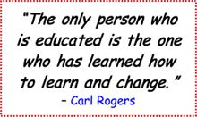

My own learning has been transformed by my PLN and I can’t imagine doing the work I do without the support of the people in it (see www.linkedin.com/in/tonikrasnic and https://twitter.com/conciselearning for examples of my PLN). By reflecting on ideas introduced by members of my PLN, I bolster my own learning and ability to create new ideas. I also get to know and meet people I would never have the opportunity to meet were it not for the advantages afforded by technology.
People learn through their connections to other people and new ideas. If you’re serious about lifelong learning, you must be serious about developing your PLN. By doing so, you’ll be able to learn just about anything, anytime, anywhere and connect with anybody, helping you grow and create and, in turn, contribute to your PLN in ways that help others grow and create. For additional resources on PLN and lifelong learning, visit http://www.scoop.it/t/lifelong-learning.
As discussed in Section 6.3, you can’t rely on your school education to suffice for the rest of your life. If you want to stay ahead, you need to commit to self-directed, lifelong learning, develop your PLN, and take responsibility for your own personal and professional development.

Lifelong learners are eager for new learning and are motivated by learning itself. They are also goal-directed and know how to set challenging learning goals, organize resources to facilitate learning, and monitor their progress. They also know how to sustain the effort and foster the resilience that reaching their learning goals will require.
Each learner is unique and, thus, learning is most effective when it’s personalized. That happens when learners take an active role in shaping what and how they learn and then put their learning into action. The following visual map shows one example of a self-directed learning plan. This plan may serve as a template for some learners, whereas others may find it useful only as a starting point.